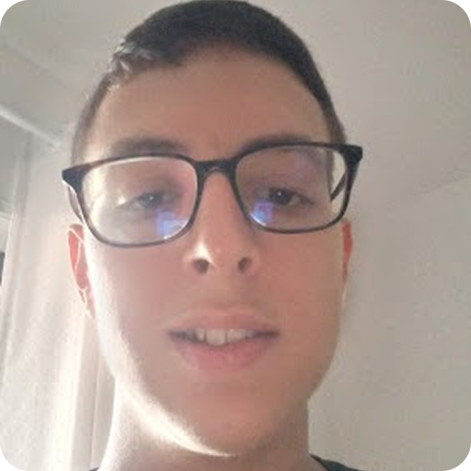
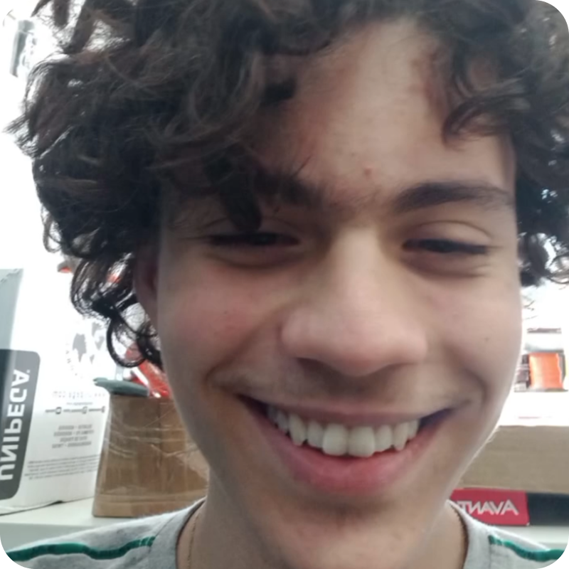

SOBRE OS CRIADORES
-
GABRIEL VICENTE ZIELE
Gabriel Vicente Ziele, nascido no dia 12 de Agosto de 2009 (17 anos), tem experiência em muay thai e jiu-jitsu.

-
MATHEUS ARAÚJO DOS SANTOS
Matheus Araújo dos Santos, nascido no dia 20 de Novembro de 2010 (16 anos), tem experiência em arte, animação e programação de jogos.
-
DAVI DE OLIVEIRA FERNANDES
Davi de Oliveira Fernandes, nascido no dia 17 de Outubro de 2011 (15 anos), tem experiência em jogos, programação e matemática.
-

FÁBIO SEBASTIAN CORREA MARQUES
Fábio Sebastian Correa Marques, nascido no dia 21 de Outubro de 2010 (16 anos), tem experiência em culinária e edição de vídeos.
-

RIAN LUKA GAZZIERO DA ROSA
Rian Luka Gazziero da Rosa, nascido no dia 05 de Setembro de 2009 (17 anos), tem experiência em edição de vídeo, violão e vólei.
-
JOÃO PEDRO DA ROSA
João Pedro da Rosa, nascido no dia 03 de Abril de 2010 (16 anos), tem experiência em criação de roteiros e histórias.